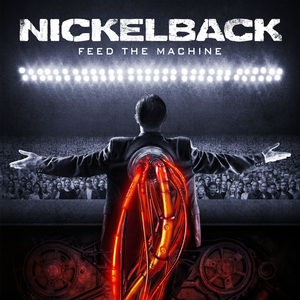
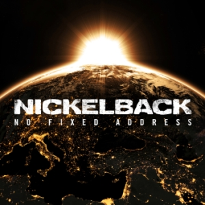
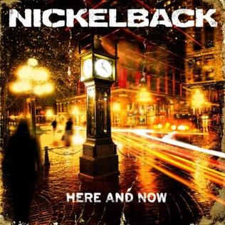

|  |  |  |
|---|---|---|
| Feed the Machine (2017) | No Fixed Address (2014) | Here and Now (2011) |
| 1. Feed the Machine | 1. Million Miles an Hour | 1. This Means War |
| 2. Coin for the Ferryman | 2. Edge of a Revolution | 2. Bottoms Up |
| 3. Song on Fire | 3. What Are You Waiting For? | 3. When We Stand Together |
| 4. Must be Nice | 4. She Keeps Me Up | 4. Midnight Queen |
| 5. After the Rain | 5. Make Me Believe Again | 5. Gotta Get Me Some |
| 6. For the River | 6. Satellite | 6. Lullaby |
| 7. Home | 7. Get 'Em Up | 7. Kiss It Goodbye |
| 8. The Betrayal (Act III) | 8. The Hammer's Coming Down | 8. Trying Not to Love You |
| 9. Silent Majority | 9. Miss You | 9. Holding on to Heaven |
| 10. Every Time We're Together | 10. Got Me Runnin' Round | 10. Everything I Wanna Do |
| 11. The Betrayal (Act I) | 11. Sister Sin | 11. Don't Ever Let It End |